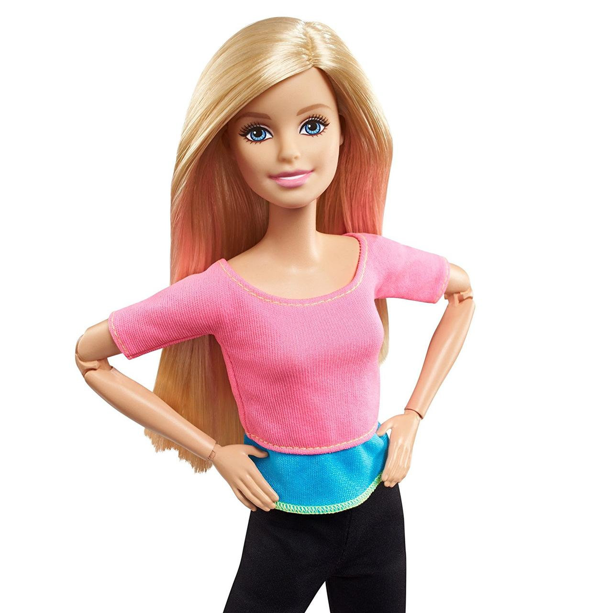
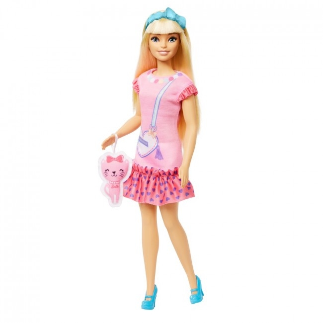

Барбі» (англ. Barbie) — американський фентезійний комедійний феміністичний фільм[10], заснований на однойменній іграшці від Mattel. Режисеркою фільму є Ґрета Ґервіґ за сценарієм, написаним у співавторстві з Ноєм Баумбахом[10].
.jpg )
Головні ролі виконали Марґо Роббі та Раян Ґослінґ, а у ролях другого плану — Америка Феррера, Симу Лю, Кейт Маккінон, Аріана Грінблатт, Александра Шипп, Емма Макі, Вілл Феррелл та Майкл Сера.

знятий жінкою-режисеркою, найкасовіший фільм за мотивами іграшок та рекордсмен серед стрічок без IMAX.[12]